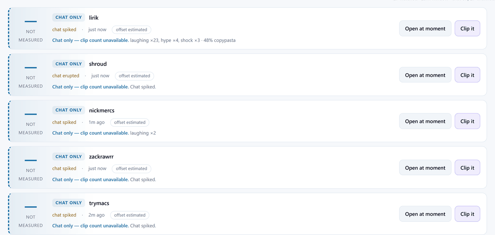
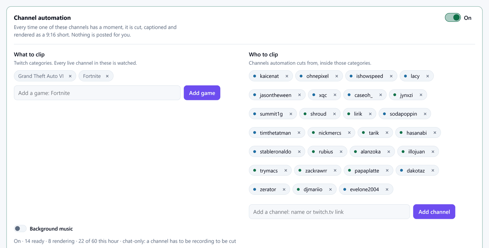
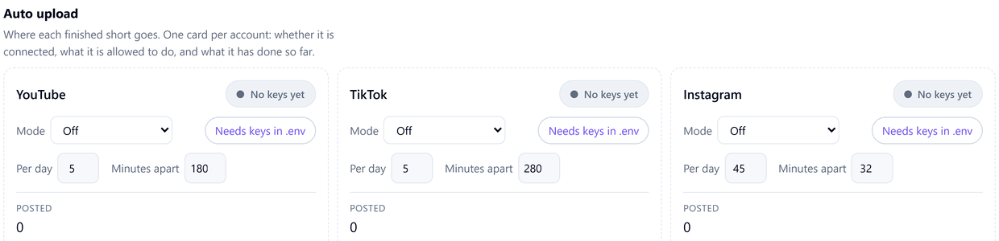

Clip the stream while it is still live
Every other clipper asks you for a video you already have. This one watches the channels you pick, notices the moment chat goes off, and has the vertical short cut, captioned and posted before the stream has ended. You do not have to be at the computer. You do not have to be awake.
Runs on your own PC. Your accounts, your API keys, your files.
Three things to set up, then it runs without you
The point is not a faster editor. The point is that nobody has to open one.
Name the channels
Paste in the streamers you want watched, or let it follow whoever is currently live on a game. It keeps a socket open to each chat and watches how fast people are typing.
It cuts what chat reacted to
A spike in chat is the signal. It pulls the thirty seconds around it, crops to vertical, keeps the face in frame, writes a caption from what was actually said, and scores how promising the moment was.
It posts, inside limits you set
Straight to your own YouTube and TikTok through their official APIs. You set how many a day and how far apart. Every clip credits the streamer and links back to the source.
The whole pipeline, not one step of it
Every piece below is already built. There is no editor to open between them.
Chat is the judge
It does not guess what was funny. It watches how many people reacted and how fast, which is the only opinion that has ever predicted anything.
Vertical without losing the face
A 16:9 stream cropped to 9:16 usually throws away the person. This finds the face and keeps it in frame for the whole clip.
Captions from what was said
The clip is transcribed, subtitles are burned in, and the title quotes a real line — but only when that line actually names something. "What do you think?" is thrown away.
Posting on a leash
Caps per day, minimum spacing, and a queue that knows what each platform has already taken. It will refuse to post rather than burn your quota.
It tells you when it is wrong
One command asks YouTube what every clip it posted actually did, and reports whether its own scoring predicted any of it. When the answer is no, it says no.
Credit is not optional
Every clip carries the streamer's name and a link back to the stream it came from. That is built in, not a setting you can quietly turn off.
Nothing is uploaded to us, because there is no us
This is not a service with your footage on it. You get a copy, it runs on your computer, and it talks to YouTube and TikTok with credentials you granted yourself. There is no account to make, no server holding your video, and no company that can read your clips, change the terms, or go out of business and take the pipeline with it.
Raw chat is counted and thrown away rather than stored. Clips live in a folder on your disk, and a sweeper deletes the ones nothing ever used.
- Where your video is processed
- Your computer
- Where clips are stored
- Your disk
- Who holds the API keys
- You
- Account required to use it
- None
- Telemetry sent anywhere
- None
- Source included
- Yes, readable
- Monthly fee
- None
One copy, one operator, paid once
You are buying the software, not a subscription to somebody else's servers. There are none to pay for.
- The full pipeline and its source
- Runs on one computer, for your own accounts
- Install check that tells you what is missing
- No monthly fee and no usage metering
- Updates while the licence lasts
The amount is deliberately blank. Nobody has sold a copy yet, so any number printed here would be a guess dressed up as a price.
The questions worth answering honestly
What do I need to run it?
A computer that stays on, Node 24, ffmpeg and yt-dlp, and at least one account you want to post to. The install check names anything missing and tells you how to fix it before you waste an evening.
Does it really post without me?
Yes, within the caps you set. You can also leave posting switched off and use it purely as a machine that finds and cuts moments, then post by hand.
Will this get my channel in trouble?
It posts through the platforms' own APIs with credentials you granted, one account at a time, with no browser automation and nothing designed to look human. Every clip credits the streamer and links to the source. Whether a given streamer wants to be clipped is still a conversation you should have with them.
Does it only work for one game?
No. It was built watching Grand Theft Auto VI because that is where the audience was, but the channels and the game are settings. Anything on Twitch with a busy chat works the same way.
Is it open source?
No, and the licence says so plainly. You get the source because the software cannot run without it and you should be able to read what it does on your machine. You may not redistribute it or run it as a service for other people's accounts.
Does it guarantee views?
No, and anything that tells you otherwise is selling you something. It guarantees that clips get made and posted every day without you. It also ships the tool that measures whether its own choices predicted views, which is the part most products in this category leave out.
The thirty-second version
Someone wanting to clip GTA 6, and the thing being built in front of them: pick the games, pick the channels, and it cuts whichever of them chat reacts to.
Made by the tool's own renderer, so the dashboard in it is the real layout. No streamer footage and nobody's face.
What you are looking at, before you download it
Three panels from a real run — not a mock-up and not a design. The tool took these of itself, against its own database, with the chat sockets open. On a phone they are too small to read: open any of them for the full-size picture.


It finds the moment while the stream is still running
Minutes after starting, with no Twitch key in the file yet. It is reading chat on the channels you picked and listing the ones that just went off, with what it heard: laughing, shock, hype, how much of the chat was copypasta. Every row says chat only, because without an API key it cannot know how many other people have already clipped that moment, and a number it does not have is not a number it shows.


You choose what it watches, and nothing else
Categories on the left, channels on the right. Every live channel inside those categories is watched, and each chip carries what that one is doing right now - listening, recording, or not live. Adding a channel is a name in a box. Nothing is posted for you from this panel; it only decides what gets cut.


And it will not post more than you let it
One card per account: off, dry run or on, how many a day, and how far apart. The per-day box stops at what the platform itself allows - six for YouTube, because its daily quota buys six uploads - and says so rather than letting you set a number that would spend an upload on a refusal. These three say no keys yet because the machine that took the picture has none; connecting an account is step three.
Four steps, about twenty minutes
It is one Node project with no npm dependencies to install. The longest part is making a Twitch application, which is a form on their site and is free.
-
Get the files
-
See what your machine is missing
Unzip it, open a terminal in the folder, and run:
npm run doctorIt checks for Node 24, ffmpeg and yt-dlp, and tells you where to get whichever one you do not have. Nothing is downloaded behind your back.
-
Give it a Twitch key
Copy
.env.exampleto.env, then register an app at dev.twitch.tv and paste its client ID and secret in.Keys live in that file and nowhere else. Accounts to post to come later, from inside the dashboard — you can run the whole thing without connecting any.
-
Start it
npm startThen open
localhost:3000. The dashboard answers on your own machine only; opening it to your network is a deliberate setting, and it will not do it without a password.
Stuck at any step, RUNNING.md is the long version and
docs/posting-setup.md covers connecting YouTube,
TikTok and Instagram. You get the source because the software
cannot run without it; what a licence does and does not allow is
in the terms.
The stream is live right now
Open the dashboard, name a channel, and watch it find something before you have finished reading this page.
Get it